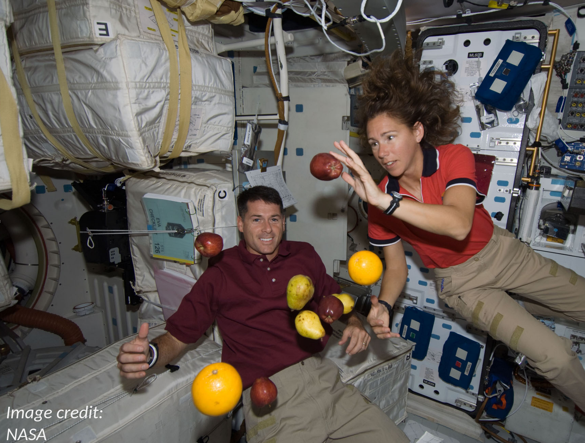
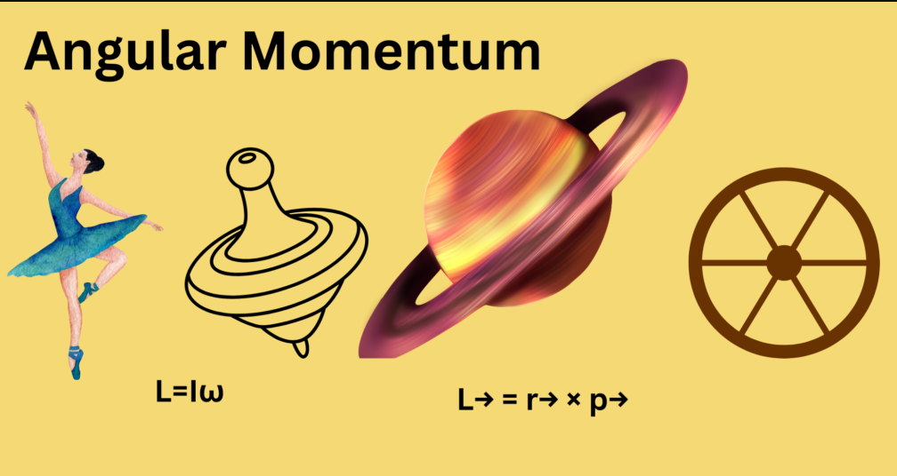
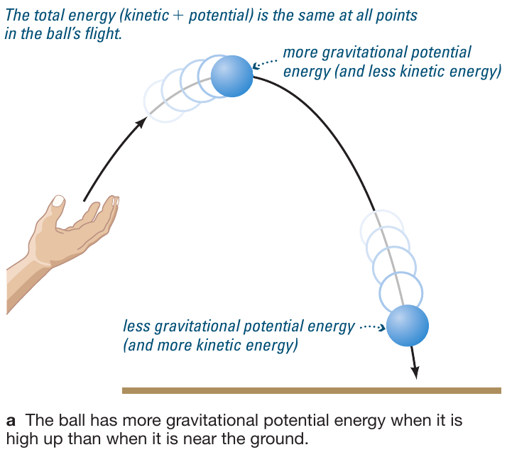

Reading: Chapter 4
TODO Recap
Top hat questions.
Example: dynamics of falling objects
\(\mathbf{F} = m\mathbf{a}\) is a vector equation. For a physics problem in three dimension treated in Cartesian coordinates, this equation is equivalent to:
Each of these have to be individually true along the \(x\), \(y\), and \(z\) directions for the vectorial equation representing Newton's second law to be valid.
Let's consider the case where \(\mathbf{F}\equiv \mathbf{F}_{\rm grav}\) is gravity, for example a ski jumper going off a ramp in absence of friction:
Let's chose a system of coordinates such that Earth's gravity is along the \(z\) direction, and the ramp is along the \(x\) direction. Then:
Since there is no force in the \(x\) and \(y\) direction (we are neglecting friction with the air and between ground and skiis), there is no acceleration (2nd Newton's laws of dynamics). But if there is no acceleration, there is by definition no change in velocity: whatever the initial velocity of the skier in the \(x\) and \(y\) direction is, it remains constant! In other words: gravity does not influence in any way the horizontal motion and by the 1st law of dynamics, a body like the skier keeps its velocity.
Gravity does act in the \(z\) direction though (the skier is going to land at some point!). Considering only the equation along this direction, we note that \(m_{\rm skier}\) appears on both sides of the equation and it is a non-zero quantity (otherwise there is no skier!), so we can divide each side by \(m_{\rm skier}\) to make it go away:
This is in fact the gravitational acceleration! Note that \(r\) here is the distance to the center of the Earth, \(r=R_{\rm Earth}+\delta r\) where \(\delta r\ll R_{\rm Earth}\) because the skier doesn't jump thousands of km high. Therefore we can also neglect the small \(\delta r\) w.r.t. \(R_{\rm Earth}\) and obtain:
which is constant (all the quantities are constant!) for small displacements w.r.t. the size of Earth (so for anything smaller than thousands of km). So the equation of motion in the vertical direction becomes:
that is the initial vertical velocity \(v_{z}(t=0)\) plus the acceleration term we just found. From the velocity we can find the position (integrating in time).
Example: is there gravity in space?
Netwonian's gravity says \(F_{\rm grav}\propto r^{-2}\), which means that it is non-zero everywhere! Gravity drops off quickly (power -2), but never completely. So everywhere one may look there is gravity!
Why do things float "in space" then? Actually not everything floats, things in space constantly fall onto each other because there is gravity.
What usually people think of is "why do things float in orbit?" For example, in the International Space Station:

The reason is that everything is falling at the same rate towards Earth! The astronauts, the fruits, and the ship itself are all falling at the same rate (same acceleration), and thus do not experience an acceleration relative to each other while they are all accelerating relative to Earth.
Recall that \(\mathbf{a} = d\mathbf{v}/dt \neq 0\) even if \(\mathbf{v}\) is only changing direction.
Conservation laws in physics
In my opinion, one of the most beautiful results of theoretical physics is due to Emmy Noether, which states that for every symmetry in nature, there is a corresponding conserved physical quantity.
Newton's laws are a consequence of the conservation of these physical quantities due to the symmetries of nature!
N.B.: What does it mean to be conserved for a quantity? It literally means that it does not change (in time or under certain transformation). For an example not involving time: the "shape" of an object is conserved under rotation.
Conservation of momentum
This is a consequence of the symmetry of space-time with translations (side-ways motions): the dynamics of a system, what causes its motion, does not depend on where you are, you can shift around in any direction and observe the same phenomena related to momentum.
The laws of dynamics follow from this: in absence of an external force a body maintains its velocity and its mass, therefore also its momentum \(\mathbf{p}=m\mathbf{v}\), which is conserved (1st Newton's lawnil). And if there is an external force on a body (a source term for its momentum), there is an equal and opposite force exerted by this body on the forcing agent, so that in total the net force on both body and agent is zero and the total momentum remains constant (3rd law).
Conservation of angular momentum
This is a consequence of symmetry of space-time w.r.t. rotations, and it is a vector quantity:
where \(\mathbf{p}=m\mathbf{v}\) is the momentum discussed above and \(\mathbf{r}\) is the distance to the rotation axis.
Because it is a vector, it is characterized by multiple components (\(x,y,z\)): conservation of angular momentum requires the total angular momentum to be conserved, which means also in direction and not only in amplitude.

Conservation of angular momentum examples:
- bike: if not moving (\(v=0\Rightarrow p=mv=0\)) there is no angular momentum (\(J=r\times p\equiv0\)) and it is very hard to stand on it without falling. If moving, then \(J\neq0\) needs to be constant, including in direction: it gets easier to ride without falling because to fall the direction of the angular momentum!
- ballerina: a spinning ballerina closes their arms, this decreases \(\mathbf{r}\), so to keep the angular momentum constant, the velocity \(\mathbf{v}\) has to increase.
- Earth's rotation: this carries angular momentum too, which is conserved. In absence of any perturbation, Earth would continue to rotate with the same \(\mathbf{r}\) and \(\mathbf{p}\) around the Sun (same for the Moon around the Earth, other planets, etc.)
3rd Kepler law
We can understand the 3rd Kepler's law as a consequence of angular momentum conservation: if the orbit is elliptic, then the distance planet-Sun is varying along the orbit, \(\mathrm{r} \equiv \mathrm{r}(t)\). To keep \(\mathrm{J} = \mathrm{r}\times\mathrm{p}\) constant then, also the momentum \(\mathrm{p}\equiv\mathrm{p}(t)\). Since \(\mathrm{p}=m\mathrm{v}\), and since the \(m\) of the planet does not change year-by-year, then the velocity \(\mathrm{v}\equiv\mathrm{v}(t)\): the orbital velocity of the planet cannot be constant!
Specifically, from the conservation of \(\mathrm{J}\) one finds that when \(\mathrm{r}\) is smaller (at pericenter, closer to the star), then \(\mathrm{v}\) needs to be larger: planets pass faster at their closest point to the Sun, and spend more time farther away.
Note that Kepler's 3rd law already described this empirically, but conservation of angular momentum provides the theoretical basis to understand this observed phenomenon.
Conservation of energy
This is a consequence of the symmetry of space-time for temporal translation (yesterday is the same as today).
Energy is by definition the capacity of a system to do work, where work is the product of a force \(F\) times a displacement \(d\):
Since this is a dot-product, it produces from two vectors (force and displacement) a scalar. Energy is also a scalar, and it can come in various forms
Kinetic
\(E_{kin} = \frac{1}{2}mv^{2}\)
Thermal
Thermal energy is a form of kinetic energy due to the random agitation of constituents (e.g., molecules of a gas). \(E_{th} = k_{b}T\)
What distinguishes the "thermal" energy is the randomness of the motion, as opposed to the ordered motion of a system: for example, throwing a ball in a direction causes an "ordered" global motion of each molecule of the ball in that direction (by throwing you gave a global kinetic energy and momentum to the ball), but every molecule is also wiggling in a random direction, often much "faster" than the global velocity, but leading to a very small displacement before molecules "bump" into each other and change their (random) direction of motion.
To calculate the "thermal velocity" (the random component of the velocity due to thermal motion), see this online tool. for example air is mostly (∼70%) made of nitrogen molecules \(\mathrm{N}_{2}\), made of two nitrogen atoms, each having a mass of \(\sim14\) atomic units (7 protons + 7 neutrons), so the molecule has a mass \(\sim28\) atomic units, or in other units, 4.651734×10−26 kg. At a room temperature of 300K, this corresponds to random velocities of the air of 516 m/s!
N.B.: the temperature measures the average kinetic energy of particles in a system due to their random motion. The thermal energy measures total energy of a system due to this, which also depends on the density of he system (think of putting your hand in an oven or in a pot of boiling water: the over is hotter, but the boiling water is denser and thus has a higher thermal energy).
Radiative
Energy in the radiation field, i.e., carried by the light (photons)
\(E_{rad}=\frac{1}{3}a T^{4}\)
Potential
It comes in many form, depending on the kind of process that can release it (e.g., transform it into kinetic energy), e.g. chemical potential energy for an explosive.
For gravitational potential energy in a constant gravity \(g\) (e.g. on Earth \(g \simeq 10\mathrm{m s^{-2}^{}}\)): \(E_{pot }= mgh\)
Binding energy
The amount of energy you have to provide to a system for breaking it into its component and pull them apart at infinity, or in other words the amount of energy that had to be spent to assemble it. This concept is important because often astrophysical processes are powered by breaking objects and releasing this energy (e.g., the explosion of a star!), or viceversa a system loses energy storing it into the binding energy of something being assembled.
Rest-energy
\(E=m c^{2}\)
N.B.: In reality the formula is \(E=m\gamma c^{2}\) where \(\gamma=1/\sqrt{1-v^{2}/c^{2}}\) and \(v\) is the velocity of the object of mass \(m\) in the current reference frame.
Energy transforms from one form or the other
